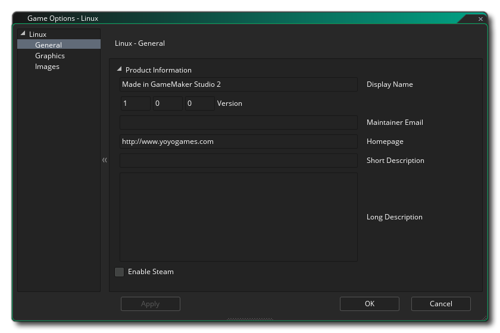

In diesem Abschnitt werden die verschiedenen verfügbaren Optionen beschrieben, die steuern, wie Ihre Ubuntu (Linux) -Spielprojekte kompiliert werden. Die verschiedenen Abschnitte sind:

Auf dieser Registerkarte legen Sie den Namen Ihres Spiels so fest, wie er während der Ausführung angezeigt werden soll. Außerdem können Sie eine Kontakt-E-Mail und eine Beschreibung (kurz und lang) sowie eine URL für die Homepage des Spiels oder des Entwicklers angeben.
Die Grafikoptionen sind diejenigen, die Sie konfigurieren sollten, um zu bestimmen, wie Ihr Spiel die Grafikkarte Ihres Ziel-Ubuntu-Computers verwendet. Die folgenden Optionen sind enthalten, die Sie ändern können:
- Vollbild starten: Wenn diese Option aktiviert ist, wird das Spiel im Vollbildmodus gestartet, andernfalls wird es im Fenster angezeigt. Dies ist standardmäßig deaktiviert.
- Fullscreen Switching zulassen: Mit dieser Option kann der Benutzer mit den standardmäßigen Ubuntu OS-Shortcuts von Vollbild zu Fenster und zurück wechseln. Dies ist standardmäßig deaktiviert.
- Interpolieren von Farben zwischen Pixeln: Schaltet die Interpolation ein, die Pixel im Grunde "glättet". Für knackige Pixelgrafiken sollte es ausgeschaltet sein, aber wenn Sie schöne Alpha-Mischungen und geglättete Kantengrafiken haben, ist es besser eingeschaltet. Dies ist standardmäßig deaktiviert.
- Cursor anzeigen: Wenn diese Option aktiviert ist, wird der standardmäßige OS-Cursor in Ihrem Spiel angezeigt. Wenn dies deaktiviert ist, dann ist, während sich die Maus über dem Spielfenster befindet, kein Cursor sichtbar, es sei denn, Sie haben einen als Teil des Spielprojekts erstellt (standardmäßig aktiviert).
- Verwenden Sie die Synchronisierung, um ein Aufreißen zu vermeiden: Dadurch wird die V-Synchronisierung ein- oder ausgeschaltet (v-sync wird verwendet, um die Aktualisierungsgeschwindigkeit des Spiels mit der Aktualisierungsrate des Monitors zu synchronisieren). Beachten Sie, dass wenn Sie ein Spiel mit einer Zimmergeschwindigkeit von 120 haben und der Spieler einen Monitor mit einer Wiederholungsrate von 60 hat, wird Ihre Spielgeschwindigkeit auf 60 eingestellt, wenn Sie diese Option aktivieren. Dies ist standardmäßig deaktiviert.
- Dem Player erlauben, die Größe des Spielfensters zu ändern: Wenn Sie diese Option aktivieren, kann der Benutzer die Größe des Spielfensters ändern (die Option Randloses Fenster muss deaktiviert sein , damit dies funktioniert). Diese Option ist standardmäßig deaktiviert.
- Skalierung: Hier können Sie das Seitenverhältnis beibehalten (so dass ein 4: 3-Raum auf einem 16: 9 "Letterboxed" ist) oder vollständig skalieren (das Bild auf den gesamten Bildschirm ausdehnen).
WARNUNG! Wenn Sie die Oberfläche der Anwendung ausschalten, werden alle in den Ubuntu-Spieloptionen festgelegten Skalierungsoptionen deaktiviert, bis sie wieder eingeschaltet werden. Weitere Informationen finden Sie unter Die Anwendungsoberfläche.Schließlich gibt es noch die Möglichkeit, die Größe der Textur-Seite festzulegen. Die Standardgröße (und die meist kompatible) ist 2048x2048, aber Sie können zwischen 256x256 und 8192x8192 wählen! Es gibt auch eine Schaltfläche mit der Bezeichnung View, die die Textur-Seiten für diese Plattform generiert und dann ein Fenster öffnet, damit Sie sehen können, wie sie aussehen. Dies kann sehr nützlich sein, wenn Sie sehen möchten, wie die Strukturseiten strukturiert sind und um zu verhindern, dass Strukturseiten größer (oder kleiner) als nötig sind.
HINWEIS: Je größer die Texturseite ist, desto weniger kompatibel ist Ihr Spiel auf Macs mit niedrigeren Spezifikationen.
Hier können Sie einen Begrüßungsbildschirm für Ihr Spiel hinzufügen und das Spielesymbol festlegen, das verwendet wird. Das Icon muss ein 64x64 Pixel Bild sein .png Format, und der Begrüßungsbildschirm sollte mindestens die gleiche Größe wie der erste Raum in Ihrem Spiel (oder es ist Ansicht Port) und sein .png Format auch. Der Splash - Screen, während das Spiel geladen gezeigt werden, und kann durch die Überprüfung der Verwendung Splash Screen - Option (die ausgeschaltet ist standardmäßig aktiviert ) aktiviert oder deaktiviert werden.
Es ist erwähnenswert, dass GameMaker Studio 2 ein Project Image Generator- Tool enthält, mit dem automatisch alle Bilder erstellt werden können, die für die verschiedenen Zielplattformen benötigt werden, auf denen das Spiel kompiliert wird. Wenn Sie dieses Tool verwenden, sollten Sie die erstellten Bilder überarbeiten, um sicherzustellen, dass sie Ihren Anforderungen entsprechen.